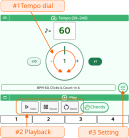
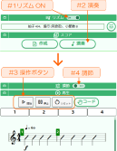
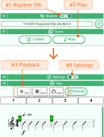

Table of Contents 目次
- Show hints ヒントの表示
- First Click Playback はじめのクリック再生
- Click Playback and Rhythm Score クリック再生とリズム譜
- Help & Support 困ったときは
Show hints ヒントの表示
- Tap the web_asset icon on the screen to show hints. 画面内にある web_asset アイコンをタップすると、ヒントが表示されます。
First Click Playback はじめのクリック再生
Let's learn the steps to get the click running. クリックを動かす手順を説明します。


- #1 Turn the tempo dial to change the tempo. #1 テンポダイアルをぐるぐる回してテンポを変更する。
- #2 Press "Start" in Playback to begin the click. #2 クリック操作の「開始」からクリックを開始。
- While the click is running, try changing the tempo or pressing "Stop". クリック中に、テンポを変更したり「停止」を押したりしてみる。
- #3 Use the Setting screen to change the tempo and other values. テンポ数などの変更は「#3 設定」画面で編集する。
Click Playback and Rhythm Score クリック再生とリズム譜
Practice by combining click playback and rhythm score display. リズム譜を見ながらクリック再生する。


- Turn ON #1 Rhythm, then tap #2 Play. #1のリズムをONにして、#2演奏ボタンを選択する。
- Use #3 operation buttons to control click playback. #3操作ボタンからクリックを操作する。
- Turn ON #4 Settings, then use the tempo dial to change the tempo. #4調節をONにするとテンポダイアルから、テンポを変更可能。
- As bar numbers are highlighted on the rhythm score, play the matching bar in time with the click. リズム譜の小節番号がハイライトされるので、クリックに合わせて演奏する。
Help & Support 困ったときは
- If you cannot hear sound, check your volume settings. On iPhone, make sure the Ring/Silent switch is OFF. 音が鳴らない場合は、音量設定を確認してください。iPhone の場合は、着信／サイレントスイッチを OFF にしてください。
- If the screen does not respond as expected, please reload the page. 画面がうまく動作しない場合は、ページをリロードしてください。